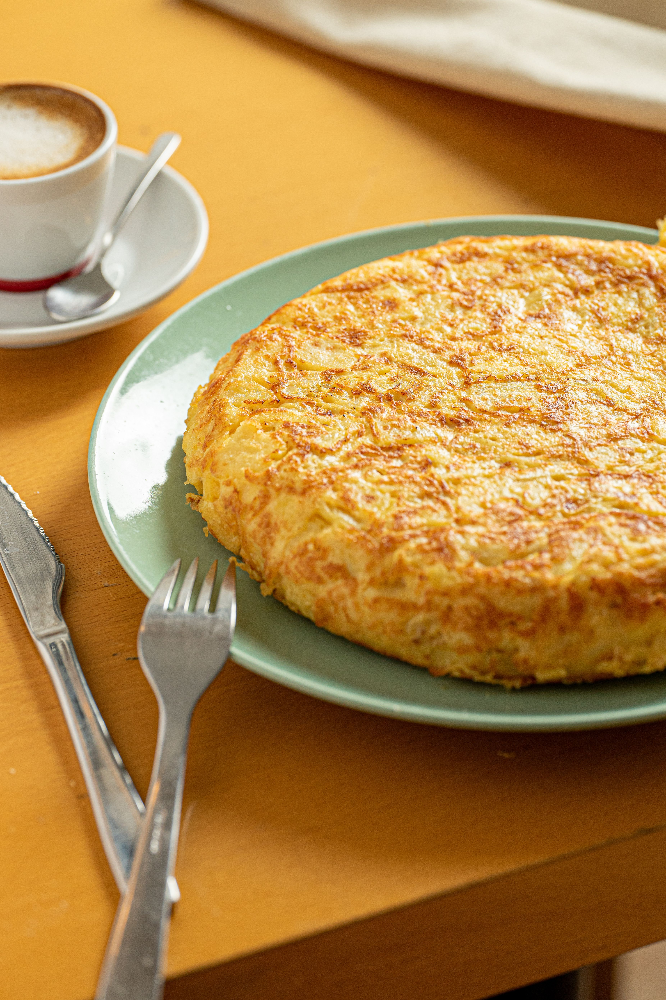

Tortilla de patatas

Description
Tortilla de patatas is one of Spain’s most iconic and beloved dishes. It is traditionally made with potatoes, eggs, olive oil, and, in many recipes like this one, onions. Known for its rich flavor and comforting texture, it can be served warm or at room temperature as a main course, a tapa, or a snack at any time of the day.
Ingredients
(4 servings)
- 700 g of potatoes
- 300 g of onions
- 6 large eggs
- Olive oil
- Salt to taste
Steps
- Peel the onion and slice it thinly. Then place it in a pan over very low heat and let it cook slowly, stirring occasionally. We want to caramelize it!
- While we wait for the onion, peel the potatoes and slice them thinly, making sure they are all a uniform size, and soak them in water for 15 minutes.
- Heat plenty of olive oil in a pan. However, before it has heated up, add the potatoes and let them fry very slowly. After 10 minutes, you can turn up the heat to brown them a bit.
- Remove the potatoes and the onion and drain them well, then place them together in a large bowl. Beat the eggs and add them to the bowl, stirring with a fork to combine all three ingredients.
- Cook the tortilla in a frying pan with a tablespoon of oil for about 3 to 4 minutes and flip it over to cook the other side.
- Enjoy!
Home